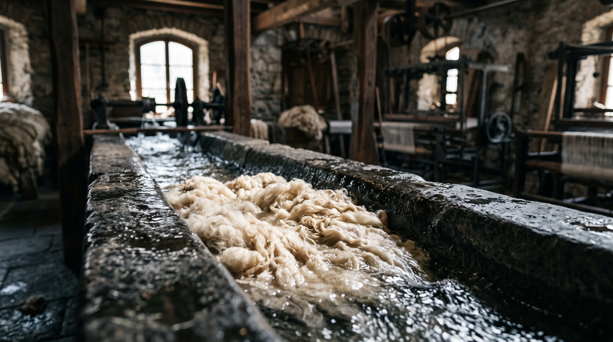
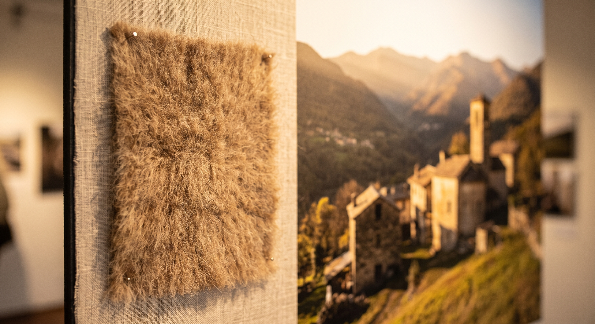
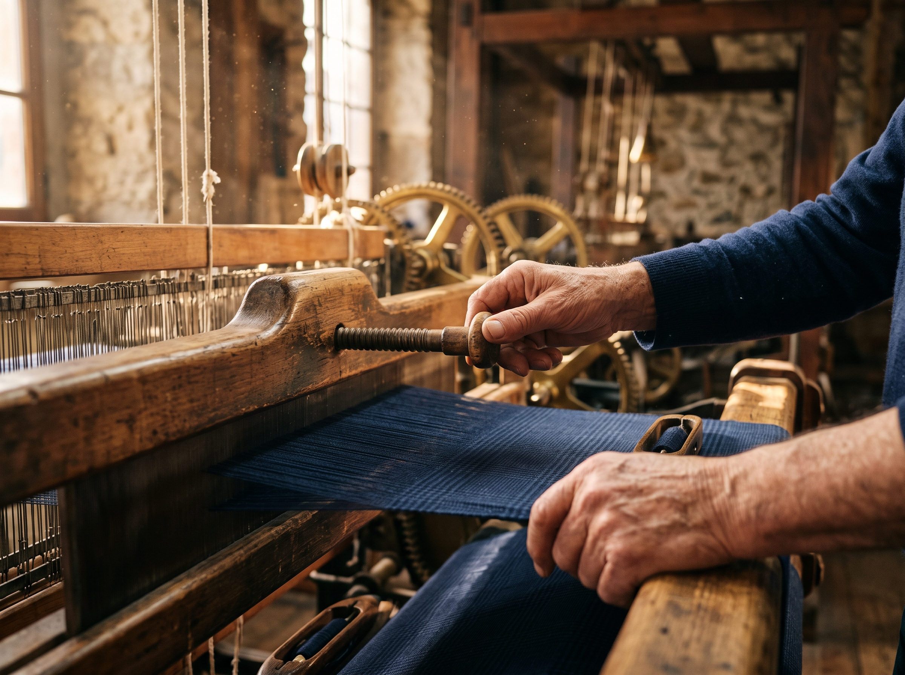
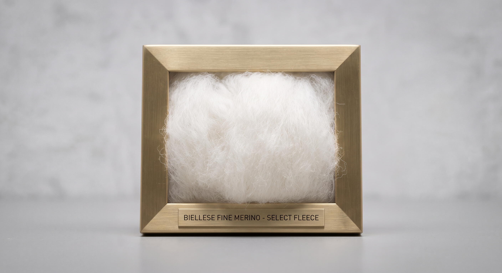
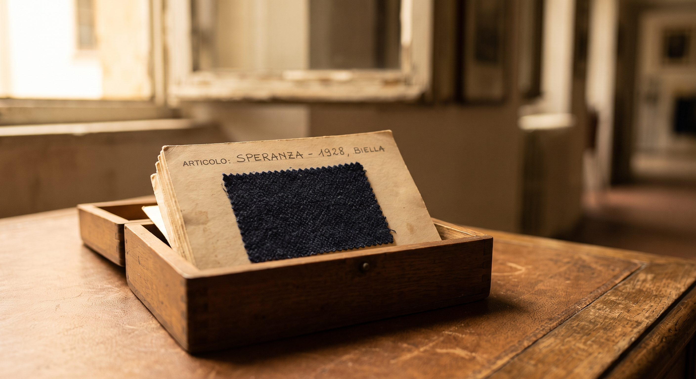
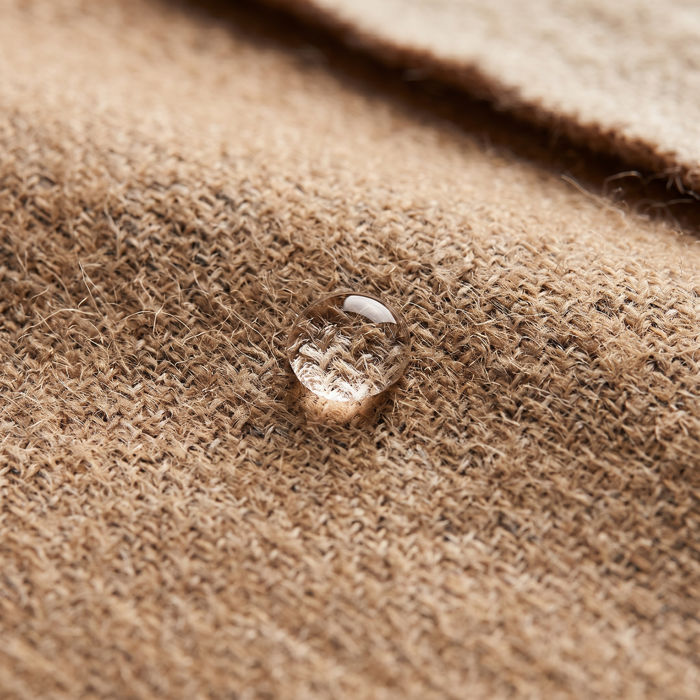

Ai piedi delle Alpi piemontesi, trasformiamo lane Merino australiane e cashmere d'alta quota in tessuti dalla morbidezza inimitabile, grazie alla purezza glaciale del torrente Cervo.

Fin dall'Ottocento, le più celebri maison sartoriali internazionali si rivolgono unicamente al distretto di Biella. Il segreto non risiede solo nella mano dei maestri tessitori, ma nelle sorgenti alpine prive di calcare che scendono dal Monte Rosa.
Questo lavaggio a bassa tensione pulisce il vello senza alterare la naturale lanolina protettiva, donando ai drappi una caduta impeccabile, brillantezza e traspirazione biologica.
Esplora il Savoir-FaireOgni metro di tessuto combina telai storici e regolazione elettronica delle tensioni sotto lo sguardo minuzioso delle nostre rammendatrici.

Telai TradizionaliI movimenti calibrati a mano garantiscono armature perfette: dai quadri principe di Galles ai finissimi twill ritorti a quattro capi.

Selezione dei VelliFibre nobili selezionate per lunghezza e resilienza, conservate nei nostri archivi secondo i più rigorosi standard etici RWS.

Dall'archivio centenario del lanificio recuperiamo finissaggi con cardi vegetali per donare al drappo una lucentezza naturale senza tempo.

Grazie alla compattezza dell'intreccio e ai finissaggi ecologici, l'acqua scivola sulla superficie lasciando la fibra naturalmente traspirante.

Forniamo atelier di alta moda, sartorie su misura e designer internazionali con tagli esclusivi, pesi personalizzati (da 220g/m² a 540g/m²) e cimose marchiate esclusive.